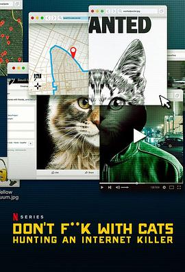

别惹猫咪：追捕虐猫者 / Don't F**k with Cats: Hunting an Internet Killer
凶手找到了，真的是疯子般的存在。。本来以为三集是三个故事，后来发现就是一个故事。电影最后的拷问很有意思，我们是不是助长了网络犯罪？虐待动物可耻，但可能并不是所有虐待都会有人注意到；发布到网上就不一样了，一下就扩散到了全球。谋杀案则不一样，它几乎总是会被警方注意到的。但是从虐待动物到谋杀的转变实际上是质的变化，如果我们少给他这些关注，是不是就好了呢？其实也不尽然，虐待动物肯定应该被抓起来，而且严厉惩罚，但是是在不受外界关注的情况下，这样犯罪代价就变高了。但是警察又经常有更多更重要的事情要做，很难因为虐待动物就跨国通缉。可能动物界也该有警察执法吧（误）。有一说一，肯定是有助长的，以后全球都像国内这样网络监管，肯定能灭绝这种事情😛
作品信息
| 导演 | 马克·刘易斯 |
| 编剧 | 马克·刘易斯 |
| 主演 | Deanna Thompson / John Green / Claudette Hamlin / Antonio Paradiso / Anna Yourkin / Benjamin Xu / Marc Lilge / Mike Nadeau / Joe Panz / Joe Warmington / Henri / Romeo Salta / Kadir Anlayisli / Joel Watts |
| 类型 | 纪录片 |
| 制片国家/地区 | 英国 / 美国 |
| 语言 | 英语 |
| 首播 | 2019-12-18(英国) |
| 集数 | 3 |
| 单集片长 | 60分钟 |
| IMDb | tt11318602 |
说过什么
2019-12-22 11:07:40
广播 · 看过 · ★★★★★
凶手找到了，真的是疯子般的存在。。本来以为三集是三个故事，后来发现就是一个故事。电影最后的拷问很有意思，我们是不是助长了网络犯罪？虐待动物可耻，但可能并不是所有虐待都会有人注意到；发布到网上就不一样了，一下就扩散到了全球。谋杀案则不一样，它几乎总是会被警方注意到的。但是从虐待动物到谋杀的转变实际上是质的变化，如果我们少给他这些关注，是不是就好了呢？其实也不尽然，虐待动物肯定应该被抓起来，而且严厉惩罚，但是是在不受外界关注的情况下，这样犯罪代价就变高了。但是警察又经常有更多更重要的事情要做，很难因为虐待动物就跨国通缉。可能动物界也该有警察执法吧（误）。有一说一，肯定是有助长的，以后全球都像国内这样网络监管，肯定能灭绝这种事情😛
2019-12-22 05:53:45
广播 · 在看 · ★★★★☆
holy shit… 竟然是这种片，最关键的是凶手没有被捕😰
2019-12-21 14:01:55
广播 · 想看
嘿嘿嘿
最后一次看到是 2026-08-01T11:05:47+10:00 · 豆瓣原页